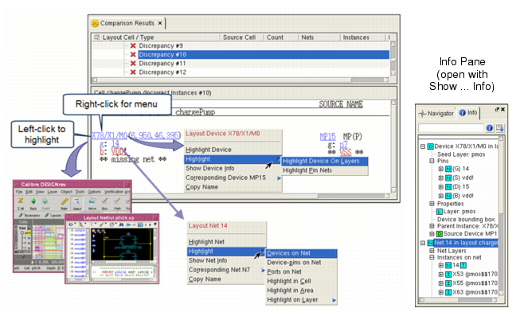

Cross-Probing in Calibre RVE for LVS
Cross-probing allows you to highlight the design elements involved in a LVS discrepancy or connectivity extraction error in the geometric layout, the source schematic, and the extracted layout schematic. Viewing the design element in both source and layout can help you determine the cause of the error.
The steps below describe cross-probing from the Comparison Results tab. The methods for cross-probing from the Extraction Results tab and the PERC Results tab are the same.
Prerequisites
An SVDB containing LVS Comparison Results. See “Rule File Requirements for Examining Results with Calibre RVE for LVS”.
The layout database for your LVS run.
A layout viewer with an interface to Calibre RVE. See “Connection to a Design Tool”.
Procedure
- Specify to highlight in the
context cell or the top cell, as follows:
- Click the Options button
(
 ) in the standard
toolbar to open the Options tab.
) in the standard
toolbar to open the Options tab. - Choose the Highlighting category.
- Expand the “LVS/PERC/PEX Highlighting” section and choose the desired behavior for “Highlight layout nets/devices/port in.”
- Click Apply.
- Click the Options button
(
- Click the Comparison
Results tab. Expand cells as needed and select a discrepancy.
A typical view is shown in Figure 1.Figure 1. Cross-Probing in Calibre RVE for LVS
You can cross-probe (highlight) the design elements as follows:
Left-click
Highlight the element in attached viewers. Highlighting obeys the setting “Highlight layout nets/devices/port in” (
Options tab, Highlighting category,
within the “LVS/PERC/PEX Highlighting” section). Right-click
The selections in the right-click menu depend on the design element. Use these selections for specific highlighting actions.
See the section “Tips for Highlighting and Cross-Probing in Calibre RVE for LVS” for some special considerations related to highlighting pins and ports on nets and highlighting pseudo cells.
Internal Schematic Viewer Tip: In the internal schematic viewer, use the
 zoom
to fit navigation icon to resize and center the image if necessary.
You can choose the arrangement of the schematic windows from the Window menu. The schematic viewer
windows can be undocked from the main session window with the control
shown at right. The selection Window
> Dock All returns all undocked windows to the main
display.
zoom
to fit navigation icon to resize and center the image if necessary.
You can choose the arrangement of the schematic windows from the Window menu. The schematic viewer
windows can be undocked from the main session window with the control
shown at right. The selection Window
> Dock All returns all undocked windows to the main
display.